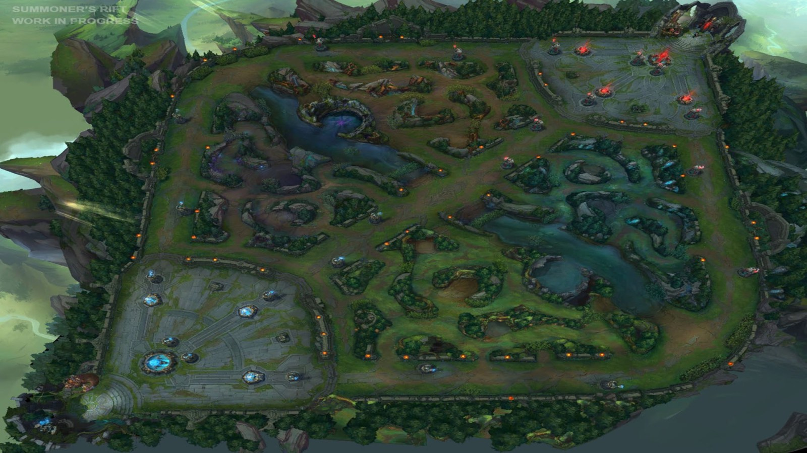

League of Legends (también conocido por sus siglas LoL) es un videojuego de género multiplayer online battle arena (MOBA) desarrollado por Riot Games para Microsoft Windows y OS X.
En octubre de 2012, contaba con 70 millones de jugadores registrados. Para marzo de 2013 se registró un pico de 5 millones de jugadores conectados al mismo tiempo en todo el mundo. Es un juego de alta competitividad siendo uno de los juegos más populares de los deportes electrónicos (e-sports).
El juego está inspirado en el popular mapa personalizado del Warcraft III, Defense of the Ancients: Allstars (abreviado normalmente con las siglas DotA) diseñado por Steve «Guinsoo» Feak y Steve «PenDragon» Mescon, el cual a su vez está basado en el escenario de StarCraft «Aeon of Strife».

Los jugadores (llamados «invocadores») se enfrentan entre ellos dividiéndose en 2 equipos de 3 o 5 jugadores cada uno, dependiendo si el modo de juego es 3 vs 3 en el escenario El Bosque Retorcido o 5 vs 5 en los escenarios El Abismo de los Lamentos y La Grieta del Invocador, siendo este último mapa el más famoso y considerado el estándar en el juego competitivo. Antes de empezar la partida, los jugadores deben escoger un personaje (llamado «campeón») durante la fase de «selección de campeón», con el cual jugarán toda la partida hasta su conclusión. Desde noviembre de 2015, hay 129 campeones disponibles, pero aproximadamente cada dos meses introducen uno nuevo al juego, siendo el último a introducir, Ivern.
Una vez terminada la fase de selección de campeón la partida propiamente empieza. Es en la base de cada equipo donde se encuentra su nexo. El objetivo del juego, y lo que determina el equipo ganador, es destruir el nexo del equipo rival. En todos los escenarios, a excepción de Dominion (modo de juego que consistía en capturar objetivos, este fue removido del juego el 22 de febrero de 2016 por su falta de popularidad) previamente es necesario acceder a la base enemiga eliminando sus inhibidores que a la vez son protegidos por torretas distribuidas a lo largo de las líneas. En el El Abismo de los Lamentos hay una sola línea hacia la base enemiga, en El Bosque Retorcido son dos líneas y en La Grieta del Invocador (siendo el escenario principal de League of Legends) son tres líneas: calle superior, calle central y calle inferior (llamados en inglés top, mid y bot, respectivamente).
En cada base aparecen cada 30 segundos oleadas de súbditos, los cuales avanzan por las líneas apoyando los asedios. En la jungla hay criaturas neutrales que se mueven poco o nada de su posición y que aparecen y reaparecen cada cierto tiempo, algunos de los cuales ofrecen bonificaciones (buffs) temporales o permanentes. Cada jugador puede matar súbditos, torretas y campeones enemigos, así como criaturas neutrales, para obtener oro y experiencia (farmear). Con el oro se compran objetos para aumentar estadísticas (ataque, defensa, vida, etc.) y con los niveles se mejoran las habilidades del campeón.
En las partidas de 5 vs. 5, pasados 20 minutos de partida, es posible realizar una rendición. Cualquier jugador puede iniciar la votación (tomándose como un voto a favor) y al terminar la misma el 70% del equipo debe estar de acuerdo (4 jugadores de 5). Si una petición de rendición ha sido rechazada se deben esperar 3 minutos para poder pedir otra, y si la rendición ha sido aprobada, el nexo propio se autodestruye, acabando así la partida en una derrota.